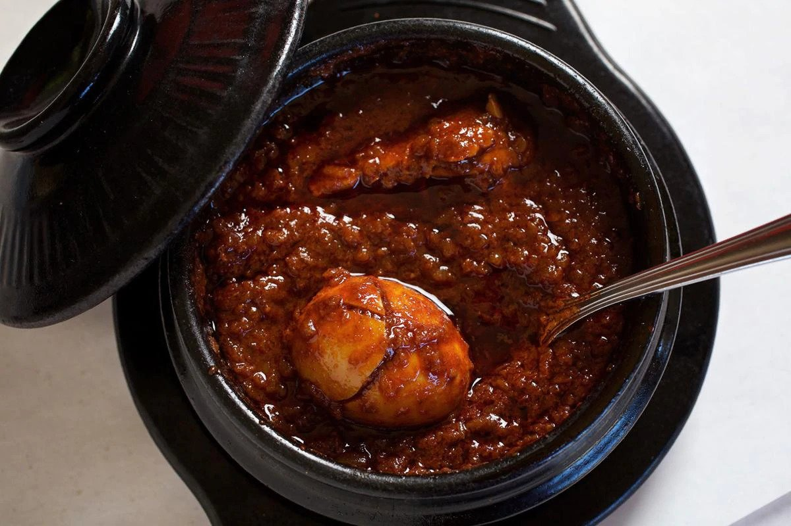

Doro wet

Ethiopian national dish, Doro wet
doro wat is the most popular traditional food in that country.
It is often eaten from a communal bowl with each diner using injera.
Ingredients
- bone-in chicken thighs
- chopped onions
- berbere paste
- hard-boiled eggs, peeled
- salt
Steps
- Combine the lemon juice and salt in a large, nonreactive mixing bowl and stir until slightly dissolved.
Add the chicken thighs, one at a time, dipping both sides of each piece in the marinade to coat.
Cover and allow to marinate in the refrigerator for about 30 minutes.
- While the chicken is marinating, purée the onions, garlic and ginger in a food processor or blender.
Add a little water, if necessary, to get the blades moving.
- Heat the butter in a Dutch oven over medium heat and stir in the paprika to color the oil.
Stir in the berbere paste and cook for 3 minutes, until heated through.
Add the onion mixture and sauté until most of the moisture evaporates and the mixture reduces, about 15 minutes.
- Pour in the stock and wine, add cayenne to taste and season with salt and pepper.
Remove the chicken from the lemon juice and discard the marinade. Add the chicken to the pot and cover with sauce.
- Add the whole hard-boiled eggs and continue to cook until the chicken is very tender, 10 to 15 minutes.
Adjust seasoning and serve hot with injera bread or rice.